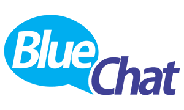

Glosario de términos relacionados con internet
A B C D F G H I L M N P R S T V WAdsense:Cualquier sitio web puede colocar Adwords, anuncios de texto relacionados con el contenido de las páginas, y sacar dinero si sus visitas pinchan en los enlaces.
Adwords:Anuncios de texto que coloca Google en los resultados de búsqueda. Los anunciantes compran ‘palabras clave’—la publicidad aparecerá cuando alguien busca esa palabra— y pagan cuando alguien pincha en el enlace.
AirPort:Primera implementación, efectuada por Apple, del estándar WiFi. Su versión original era equivalente al 802.11b y alcanzaba 11 Mb/sg; la última (AirPort Extreme) es equivalente al 802.11g y lleg a a 54 Mb/sg. El punto de acceso AirPort Express es capaz de 'bridging', una forma limitada de 'Mesh'.
Algoritmo: Palabra que deriva del nombre del matemático árabe Al-Khwarizmi (780 - 850 aprox.) y que define el conjunto de instrucciones que sirven para ejecutar una tarea o resolver un problema. Los motores de búsqueda emplean algoritmos para formar el ranking de resultados.
Applets de Java y controles ActiveX:Pequeños programas que se incrustan en las páginas web para realizar acciones de diversa índole. Crean webs atractivas pero entrañan riegos. A diferencia de los applets de Java, las páginas dinámicas creadas con la tecnología ActiveX de Microsoft sólo funcionan con el Internet Explorer y son capaces de otorgarse privilegios para realizar acciones tan malignas como borrar el disco duro.
Volver a arribaBackup::Copia de seguridad. Algo que es muy recomendable hacer de vez en cuando.
Bitrate::Técnicamente, el número medio de bits que ocupa cada segundo de grabación en un formato con pérdida. Indica la calidad de la conversión; cuanto mayor es, menor es la pérdida (y mejor el sonido)
Blogroll:colección de enlaces seleccionados que aparece en la mayoría de los blogs; generalmente apuntando a otros blogs del agrado del autor
'Bluechat':chatear con el móvil vía Bluetooth , muchas veces con intención de ligar. En espacios públicos abarrotados el no saber con quién se habla, combinado con la certeza de que está a pocos metros, entre la multitud, ejerce un poderoso atractivo. 
Bluejacking: envío de mensajes no solicitados y anónimos vía Bluetooth con fines de broma, o de ligue.
Volver a arribaCaballo de Troya o troyano:Altamente peligroso, se instala en el ordenador para provocar diversos daños o abrir una puerta trasera por la que un extraño pueda colarse desde un ordenador remoto.
Carro, Shopping Basket:Apartado en el que se van acumulando nuestras compras antes de pasar por caja para pagarlas todas juntas. Cualquier objeto depositado en el carro puede ser eliminado antes del pago; en el caso de la compra de un sólo 'clic', puede anularse durante las dos primeras horas.
Chats::Canales de charla en tiempo real presentes en nume
Circuito:unidad básica de medida de la telefonía convencional, en tiempos era un circuito eléctrico abierto entre ambos teléfonos; hoy representa la capacidad necesaria para una conversación, unos 64 Kbps. La compresión digital puede asegurar calidad con 8 kbps.
Códec:codificador-descodificador. Programa que convierte ficheros .wav en alguno de los formatos comprimidos y viceversa (para escucharlos). Puede verse una lista en Códec central
'Colaborazine', o blog colectivo: blogs en los que colaboran varios escritores diferentes. Cuando son pocos, como BoingBoing o Elástico.net, se consideran blogs, pero hay dudas cuando contribuyen muchos (Metafilter, Slashdot o Barrapunto).
Comentarios::foro que la mayoría de los blogs abren junto a cada post, que permite a los lectores dar su opinión, ampliar información, etc.
Copia oculta:Los programas de correo electrónico suelen incluir tres opciones para escribir el destinatario: ‘Para’, CC (con copia a) y CCO (Bcc, en inglés). Las direcciones colocadas en esta última no las verá ninguno de los destinatarios (se pueden colocar todas ahí).
Correo-web o webmail:A diferencia del POP, el correo se gestiona a través de una página web: los mensajes no se descargan al disco duro, se almacenan y borran en el servidor. Su ventaja es que es accesible desde cualquier ordenador conectado.
Cortafuegos:(firewalls, en inglés). Hardware (máquinas) o programas que se encargan de vigilar la conexión a Internet, permitiendo o no la entrada y salida de datos
Crackers:Hackers tentados por el reverso tenebroso. Expertos en informática que utilizan sus conocimientos para realizar acciones más o menos deplorables, como reventar programas o penetrar en ordenadores ajenos para robar o destruir datos.
Volver a arribaDialers:Programas que comunican con el proveedor de Internet para marcar el teléfono de conexión. Se han hecho tristemente famosos por su abuso: empleados como sistema de cobro por páginas pornográficas y otras, terminaron protagonizando fraudes espectaculares, pues se instalaban en el ordenador sin consentimiento del usuario y desviaban la conexión hacia un número de teléfono de los caros (906 ó 803, 806 y 807 ahora).
Dirección IP:Número único que identifica un ordenador en la Red, que suele expresarse como cuatro números separados por puntos
DNS:Domain Name System, sistema de nombres de dominio. Sistema de conversión de dominios en direcciones IP; en la práctica es una jerarquía de servidores DNS que gestionan una base de datos distribuida con búsquedas recursivas.
Dominio:Nombre único de un ordenador en Internet, asociado a una Dirección IP. Su tamaño máximo es de 255 caracteres.
Volver a arribaFlaming o Flame war. Del inglés flame (‘llama’ y ‘encender o ‘arder’ como verbo), hace referencia, en un foro, a una batalla dialéctica donde dos o más miembros se enzarzan en ataques personales que sólo sirven para hacer perder el tiempo a los demás.
Fotolog: blog en el que los posts son fotografías digitales..
Volver a arribaGeek:Originariamente es un personajes que arranca las cabezas a los pollos de un mordisco. Viene a ser como un ‘friki’ colgado de la tecnología.
Grupos de noticias. Los newsgroups o grupos de discusión sirven para reunir en la web, mediante el intercambio de mensajes, a internautas interesados por los mismos temas. Al contrario que las listas de distribución, todos son públicos, de libre acceso y escasamente (o nada) controlados.
Volver a arribaHomepage:Primera página o, mejor, portada o página principal de un sitio web. No debe confundirse con la ‘página de inicio’, que es la que vemos al abrir el navegador.
HTML: Son las siglas de Hypertext Markup Language. Es el códig o que interpretan los navegadores de Internet, la trastienda de las bonitas páginas web que vemos mientras navegamos. La versión más avanzada se conoce como XHTML (Extensible Hypertext Markup Language)
Volver a arribaInterfaz gráfica: Es la parte más visible de un programa informático, merced a la cual podemos comunicarnos con la máquina.
IP: Internet Protocol. Toda computadora conectada a Internet cuenda con una dirección IP única, que la diferencia del resto de máquinas conectadas. Kbps. Kilobits por segundo. Es la velocidad de nuestra conexión.
Volver a arribaLinux: Sistema operativo (en realidad el kernel o núcleo del sistema) de software libre, es decir, que se pueden ver y modificar su código fuente (sus tripas). A veces se emplea Linux y software libre como sinónimos.
Volver a arribaMeta-tags:Información utilizada para describir un sitio web —título, descripción, palabras clave...— presente en el código fuente (HTML). Los buscadores ya no se fían de las ‘meta-etiquetas’ para valorar las páginas pues abundan las triquiñuelas (como repetir muchas veces palabras muy buscadas), pero sí sirven para definir una web.
Volver a arribaNavegador: también conocido por su nombre en inglés: browser. Es el programa mediante el cual podemos navegar por Internet.
NIC: Network Information Centre, centro de información de Red; también conocidos como registros. Son los organismos encargados de crear y mantener la base de datos de un determinado TLD; por ejemplo, EsNIC se encarga de las direcciones .es.
Volver a arribaPDA: Siglas con las que se denominan a las computadoras de mano o handhelds. También conocidas como agendas electrónicas, pese a ser tener muchas más funciones que la de una simple agenda.
Podcasting:última moda en la Red. Consiste en la creación de programas, hablados o musicales para su descarga y disfrute por terceros; originalmente diseñados para cargarlos en un iPod y escucharlos fuera de casa. Suele usarse el formato MP3.
Volver a arribaRedes 'Mesh': el término se refiere a un tipo de red en el que cada nodo actúa como emisor y receptor con lamisma categoría, y los enlaces no son fijos; al igual que en la Internet, la información 'salta' de nodo en nodo sin seguir rutas fijas. Teóricamente un sistema Mesh inalámbrico podría cubrir una ciudad entera con un 'manto' de conectividad de gran velocidad, haciendo obsoletas las conexiones terrestres de todo tipo; cuantos más ordenadores estuviesen conectados, mayor sería su efectividad.
Registrador: Empresa que intermedia entre el usuario final y el registro (o NIC) en la compra de dominios.
Volver a arribaScripts: Programas que definen una serie de instrucciones para modificar otra aplicación. En mIRC, el programa de chat más popular, los scripts añaden todo tipo de prestaciones.
Servidor Raíz: Ordenadores en la cúspide del DNS. Hay 13 en el mundo, aunque varios de ellos están 'clonados'.
Volver a arribaTrackBack: sistema automático que permite al autor de un blog saber si alguien ha enlazado a uno de sus post.
Volver a arribaURL (Uniform Resource Locator): El ‘Localizador Uniforme de Recursos’ es otra forma de llamar a la dirección de una página web.
Volver a arribaVirus: Pequeños programas informáticos que se ocultan en el sistema, capaces de multiplicarse e infectar a otros programas. Pueden afectar al sistema o eliminar archivos. Necesitan un program a anfitrión y no se activarán hasta que alguien los ejecute.
Volver a arriba'Warblog': blogs favorables a la 'Guerra contra el Terrorismo' planteada por el actual gobierno estadounidense;partidarios de la invasión de Irak, apoyan políticas de signo conservador e intervencionista.
Volver a arriba